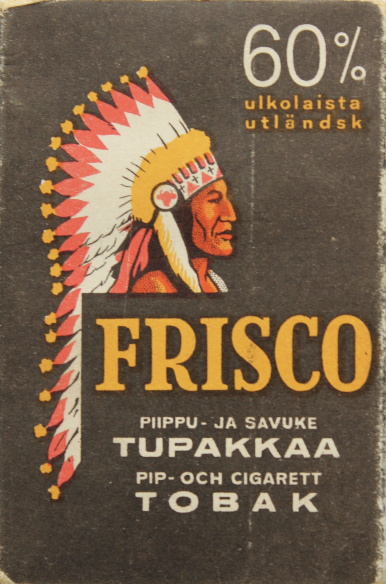

Palturitupakka eli kessu on tupakkalajike, jota alunperin viljelivät Pohjois-Amerikan alkuperäiskansat. Nyksyisin suosituin tupakkalajike on puolestaan virginiantupakka, joka on peräisin Meksikon ja Etelä-Amerikan alueelta.
Tupakan ollessa kortilla viljeltiin Suomessa kessua, viimeisimpänä sotien aikaan. Kessun juuret Suomessa ovat kuitenkin syvemmällä, aina 1600-luvulla asti.
Ensimmäiset tupakka-erät tuotiin Suomeen ulkomailta 1630-luvulla. Isovihan jälkeen 1700-luvun alkupuolella ei kuitenkaan ollut rahaa syytää ulkomaille ja kaupungit velvoitettiin kasvattamaan Kessua.
Tänä päivänä mahorkka on jäänyt masseista ja messistä, mutta oman nurkan takaa saa yhä sitä itseänsä.
“Kessulta kessu maistuu, herra majuri”, totesi Rokka Väinö Linnan Tuntemattomassa sotilaassa. Lausahdus on yllättävän samaistuttava, sillä mahorkan maku on peittelemätön, mutta myöskin esille tuomaton sekä hieman kitkerä kuten tupakalle ominaista. "Kyllä tämä tupakkaa on” tulee kuin luonnostaan huulille kessua polttaessa.
Nurkantakainen ei iske “kuin Denssi” tai tehtailtu tupakka ja poltellessa holkkiin tulee usein iskettyä useampikin sätkä. Kessun poltto on eräänlaista ajanvietettä, purkki mukaan ja menoksi.
Oheinen 40-luvun loppupuolelta oleva Frisco loota on myös selvästi kessua, mitä implikoikin kannen intiaani. Paketin kannessa kehutaan 60% ulkolaista tupakkaa, mikä herättää ainakin nykytallaajassa hieman hämmennystä. Loputko ovat kotimaista, ja eikös sen pitäisi olla hyvä asia?

Kessua 1940-luvun lopulta.
Kun asiaa lähtee selvittämään savukepaperin ja filtterin kanssa huomaa purujen olevan melko karkeita ja seassa on niin sanotusti sattumia. Joku epämääräinen karva ja alumiinin palakin tuli vastaan. Palaessaan Frisco muistuttaa itsekasvatettua tupakkaa, koska se ei raavi kurkkua eikä ole erityisen vahvaa, maussakin on jotain samaa. Maku on pohjimmiltaan mieto, mutta parkkiintuneen kahvin omainen aromi on kuitenkin vallitseva.
Tupakka on yhtäläisen hyvää filtterittä holkissa poltettuna, mutta suuhun kulkeutuva ajan saatossa jauhautunut pöly tekee polttamisesta hieman kiusallista. Kuten askissa kerrotaan, sopii frisco myös piippuun, joskin samainen pölyongelma vaivaa piipunpolttajaa.
Muut ovat kuvailleet Friscon aromeja ullakkomaiseksi ja palavaa hajua ”koirankakkamaiseksi," mutta itsellläni ei ole mitään tätä tupakkaa vastaan. Selvää tosin on, että se on kovilta ajoilta. Kenties tämän Frisco paketin valmistusvuosina tehtailtiin parempaakin tupakkaa – virginiaa ja muita ulkomaisia laatua – mikä voi olla syy siihen, että näitä askeja ajelehtii yhä päiviemme joukossa.
Jää nähtäväksi milloin seuraava kessukausi tulee Suomeen. Tuleeko taas puutetta, vai muuttuuko kaupan tupakka liian kalliiksi? Australiassa poltetaan jo tonnikaupalla Kiinasta salakuljetettua lehteä.